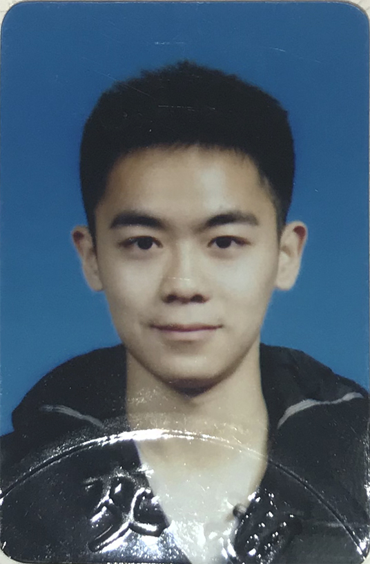

Sinyer
Major in machine learning, video analysis, and neural coding.
Work at INSIS, BJTU.
sinyeratlantis@gmail.com
站长简介(^ω^)

邱天，北京交通大学计算机学院网络科学与智能系统研究所研究员，硕士研究生。生于1995年8月30日，广东佛山人，户口于2018年2月迁至北京丰台。北京交通大学电子信息工程学院自动化专业毕业，高中就读于广东省石门中学。
2017年8月入职中国铁路通信信号集团公司国际分公司，担任通信工程师，主要负责通信系统网络架构设计、系统平台前端开发、国际项目招投标工作等。参与项目包括拉合尔橙线项目通信系统、乌兹别克斯坦铁路电气化改造工程通信系统、斯里兰卡无线列调系统、以色列红线工程项目、通号国际数据中心网络安全方案设计等，于2018年4月离职，并加入北京交通大学计算机学院网络科学与智能系统研究所，从事机器学习与强化学习算法研究的工作。
兴趣方向为生命科学与智能科学，擅长领域包括多媒体数据分析、数据流处理、AI前沿算法落地。熟悉目前人工智能领域内的绝大多数经典算法。对神经科学、心理学、认知科学领域的知识进行过系统地学习，对人脑智能和个体行为的产生和运作拥有尤为深入的理解。因为不认同目前人工智能领域的算法拥有实现智能的潜力，所以不打算从事优化现有算法的研究工作。由于曾修读生物医学工程专业，也初步学习过基础医学知识。
性格喜静，喜欢优雅温馨的日常生活。父母从事建筑行业，与政界打交道较多。个人没有很高的职业追求，希望从事轻松且自己感兴趣的工作，并且留有一定时间陪伴家人。
喜欢跑步、打网球、听好听的音乐，尤其喜欢动画的背景音乐。喜欢分享自己整理的知识笔记、壁纸、音乐、代码、以及感悟思考等。本科期间曾痴迷于动画、音响、摄影、平面设计，现在都退坑了。对从事生命科学相关行业的人和会弹钢琴的人抱有极高且无条件的好感。
理想是能拥有一家自己的公司，持有最高的决策权。平时工作上主要处理些文件、做些自己感兴趣的研究。
梦想是能构建出通用人工智能，解决人类的疾病和衰老问题，创造一个每个人都能安心幸福地生活的世界。
欢迎志同道合的小伙伴邮件联系我，交个朋友，若是以后有机会也可以一起创业。